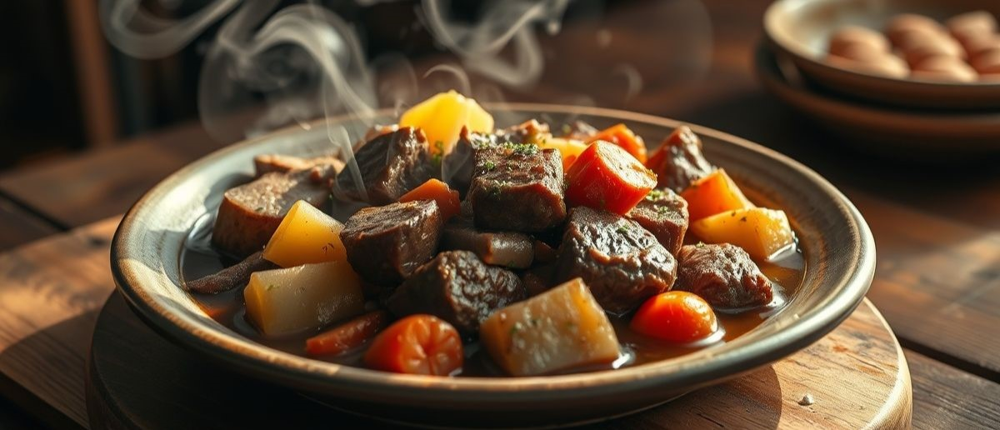

Receitas Etc

Picadinho de carne com batata e cenoura
Criada por: Rita Gonçalves
Atualizada em 06/10/2025
Reúna a família e prepare-se para um festival de sabores com a nossa receita de picadinho de carne com batata e cenoura. Esta delícia é incrivelmente fácil de fazer e ideal para quem busca praticidade sem abrir mão do sabor caseiro. Com um passo a passo detalhado e dicas simples, você vai aprender como fazer picadinho de carne sem dificuldades. E o melhor? Essa receita usa ingredientes que você provavelmente já tem na despensa e ainda pode trocar os tempos para o que tiver, tornando essa refeição ainda mais acessível. Confira a receita de picadinho de carne com batata e cenoura e surpreenda a todos com este clássico reinventado, perfeito para um almoço rápido ou um jantar aconchegante.
Ingredientes (4 porções)
- 500 g de coxão mole (cortado em cubo)
- 1 caldo de carne
- 2 dentes de alho (bem picados)
- 2 colheres de sopa de óleo
- 1 cebola média (bem picada)
- 2 folhas de louro
- 1 pitada de pimenta do reino
- 1 colher de chá de oregano
- 2 batatas médias (cortada em cubos ou pedaços médios)
- 1 cenoura pequena (cortada em rodelas)
- 200 g de molho de tomate
- 500 ml de agua (temperatura ambiente)
- Cheiro verde, salsinha (quanto preferir)
Modo de preparo
- Escolha uma panela funda.
- Coloque o óleo e os cubos de carne deixe fritar (vai soltar bastante água).
- Quando começar a secar, coloque a cebola, alho, orégano, pimenta-do-reino, caldo de carne, folhas de louro, deixe refogar (mas tenha cuidado para não deixar a carne queimar).
- Depois acrescente 250 ml de água, deixe cozinhar um pouco (5 minutos).
- Após isso coloque as batatas, cenoura, cheiro verde picado, cebolinha e o restante da água.
- Deixe cozinhar por 30 minutos e por fim coloque o molho de tomate mexa bem e deixe mais 5 minutos.